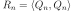
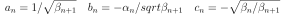

AdaptiveStieltjesAlgorithm¶
-
class
AdaptiveStieltjesAlgorithm(*args)¶ AdaptiveStieltjes algorithm used to build the orthonormal basis.
The algorithm builds a polynomial basis orthonormal with respect to a specific distribution.
- Parameters
- measure
Distribution A measure for which the orthonormal polynomial basis is built.
- measure
See also
Notes
It implements an adaptive Stieltjes algorithm that builds the polynomial family orthonormal with respect to the distribution measure, using the
GaussKronrodadaptive integration method to compute the following dot-products:  and where is the monic polynomial associated to the orthonormal polynomial , needed to compute the
coefficients of the three-terms recurrence relation that defines
(see
, needed to compute the
coefficients of the three-terms recurrence relation that defines
(see OrthogonalUnivariatePolynomialFamily):
where and .
- Attributes
thisownThe membership flag
Methods
Accessor to the object’s name.
getId()Accessor to the object’s id.
Accessor to the measure.
getName()Accessor to the object’s name.
Accessor to the recurrence coefficients.
Accessor to the object’s shadowed id.
Accessor to the object’s visibility state.
hasName()Test if the object is named.
Test if the object has a distinguishable name.
setMeasure(measure)Accessor to the measure.
setName(name)Accessor to the object’s name.
setShadowedId(id)Accessor to the object’s shadowed id.
setVisibility(visible)Accessor to the object’s visibility state.
-
getClassName()¶ Accessor to the object’s name.
- Returns
- class_namestr
The object class name (object.__class__.__name__).
-
getId()¶ Accessor to the object’s id.
- Returns
- idint
Internal unique identifier.
-
getMeasure()¶ Accessor to the measure.
- Returns
- m
Distribution The measure for which the orthonormal polynomial basis is built.
- m
-
getName()¶ Accessor to the object’s name.
- Returns
- namestr
The name of the object.
-
getRecurrenceCoefficients(n)¶ Accessor to the recurrence coefficients.
- Parameters
- ninteger
Index ot the recurrence step.
- Returns
- coefsequence of float
Calculate the coefficients of recurrence
 ,
,  ,
,  such that
such that
 .
.
-
getShadowedId()¶ Accessor to the object’s shadowed id.
- Returns
- idint
Internal unique identifier.
-
getVisibility()¶ Accessor to the object’s visibility state.
- Returns
- visiblebool
Visibility flag.
-
hasName()¶ Test if the object is named.
- Returns
- hasNamebool
True if the name is not empty.
-
hasVisibleName()¶ Test if the object has a distinguishable name.
- Returns
- hasVisibleNamebool
True if the name is not empty and not the default one.
-
setMeasure(measure)¶ Accessor to the measure.
- Parameters
- m
Distribution The measure for which the orthonormal polynomial basis is built.
- m
-
setName(name)¶ Accessor to the object’s name.
- Parameters
- namestr
The name of the object.
-
setShadowedId(id)¶ Accessor to the object’s shadowed id.
- Parameters
- idint
Internal unique identifier.
-
setVisibility(visible)¶ Accessor to the object’s visibility state.
- Parameters
- visiblebool
Visibility flag.